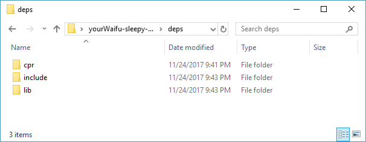
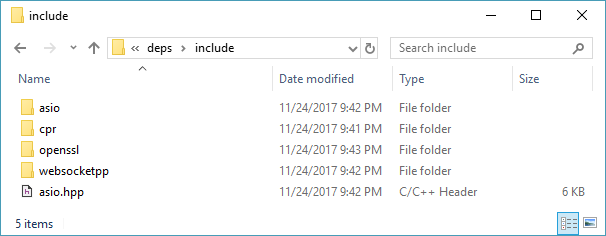

How to Compile
Requirements
- Visual Studio (recommended)
- Python 3.6.3 (optional - setup script)
Downloading Sleepy Discord
Then unzip it by extracting the files out of the zip file.
Preparing
It’s important to understand the requirements needed to run this library. You can use this library without any dependencies, but it’s easier with dependencies. To help you decide on the dependencies to use with this library, here are a list of options and other important details you will need to know when making your choice.
Features
| Feature | Example | Requirements |
|---|---|---|
| REST API | Send a message using a request | HTTP Secure |
| Gateway | Receiving a message at any time | Websockets Secure |
| Voice | Talk in a voice channel | Websockets Secure, UDP, libOpus, and libsodium |
Libraries/Options
| Option | Description | Dependencies |
|---|---|---|
| Websocket++ | A websocket library | OpenSSL and ASIO |
| uWebsockets | A websocket library | OpenSSL, zlib, and libuv or ASIO (both optional on Linux) |
| Custom Websockets | Define how Websockets will handled | None |
| CPR | A HTTP library | libCURL |
| Custom Session Class | Define how HTTP request will be handled | None |
| ASIO | Networking library, used for UDP | None |
| Custom UDP | Define how UDP request will be handled | None |
| libOpus | A audio encoder and decoder library | None |
| libsodium | An encryption library | None |
Automated setting up libraries
PS C:\> python -v
Python 3.6.3 (v3.6.3:2c5fed8, Oct 3 2017, 17:26:49) [MSC v.1900 32 bit (Intel)] on win32
>>> quit()
Make sure you have Python 3.6.3, by using python -V.
PS C:\sleepy-discord-master\> .\setup.py
What OS are you building Sleepy Discord for?
0 - Windows
1 - Linux
2 - macOS
> 0
What libraries do you want to use?
0 - CPR
1 - Websocket++
2 - uWebSockets
> 0 1
Run the script setup.py by double clicking the py file, or call .\setup.py in the command line. Then just follow the instructions on screen. Once that’s done go to Compiling Sleepy Discord.
Manual setting up libraries
Downloading CPR
The CPR library can be found here https://github.com/whoshuu/cpr. Once downloaded, in the sleepy-discord folder, make a new folder called deps (short for dependencies). Inside the deps, place the cpr-master folder in there, and rename it to cpr. Open the cpr folder, and take the include folder, and place it inside deps.


And in the cpr folder, open the opt folder. You should see an empty folder named curl. You will need to place curl there. Go here https://github.com/whoshuu/cpr/tree/master/opt and click on curl and download curl. Open the zip file and curl folder, and then drag everything in that folder into the curl folder that’s inside the opt folder. And just build curl. If on windows, just open the buildconf.bat file.

Downloading the Websocket Library
Websocketpp
You can find the Websocket++ library here https://github.com/zaphoyd/websocketpp. Once downloaded, open the zip file, and the websocketpp-master folder, and extract the websocketpp folder to the deps\include folder.

You are also going to need the Asio library, that can be found here http://think-async.com/Asio/Download. Open the zip file, and asio folder, and include folder. Extract the asio folder, and asio.hpp file to your deps\include folder.
Last, you are also going to need openSSL. There’s two options:
Download precompiled openSSL: wiki.openssl.org or npcglib.org. You will be needing 7-zip, WinRAR or other program which one is able to unzip .7z files.
Or download it from https://www.openssl.org/. Once downloaded, extract the folder inside to somewhere to work on it. To install look at the instructions in INSTALL because this has its own set of instructions including downloading and installing some other dependencies.
Once one of those two options are done, move all the .h files in openssl\include\openssl into deps\include\openssl. You’ll also need to place lib folder into deps, you’ll need this to link Sleepy Discord.

Compiling Sleepy Discord
There’s only two options:
Visual Studio
Open the sleepy_discord folder and find the sleepy_discord.vcxproj file. Open sleepy_discord.vcxproj with Visual Studio, of course. At the top, there a toolbar, click build and then build sleepy_discord. And you’re done.
Make
cd buildtools/
make -f Makefile.linux
Call those commands in your shell, and you’re done. It should compile a file called libsleepy_discord.a.
The Next Step
Now that you have a compiled Sleepy Discord, head over to How to Link to link it to a new or existing project.